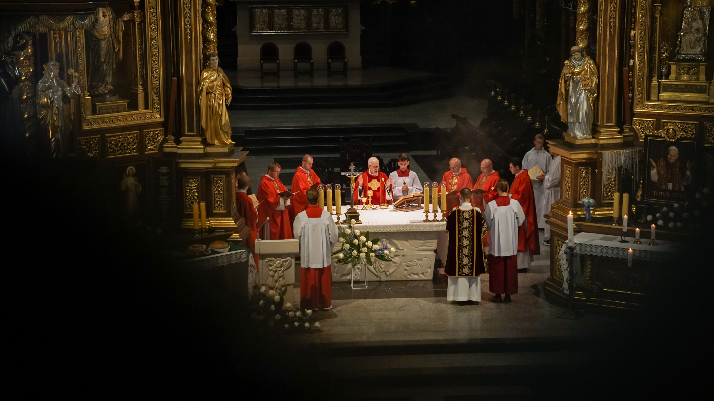
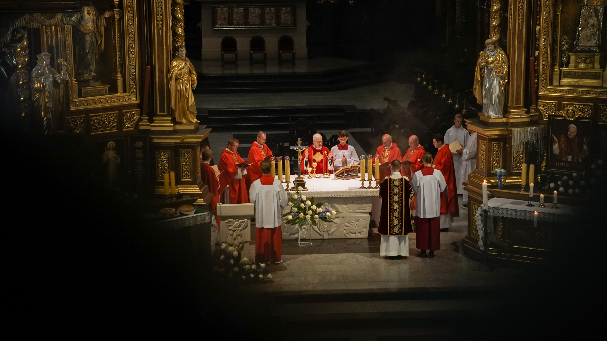
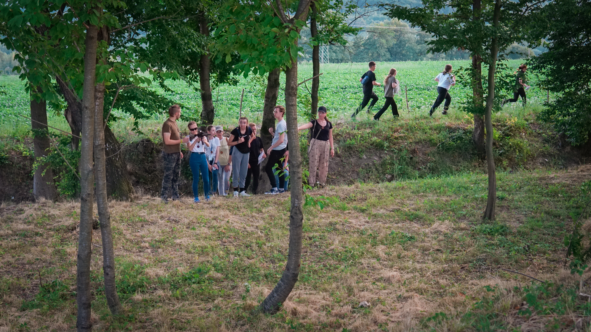
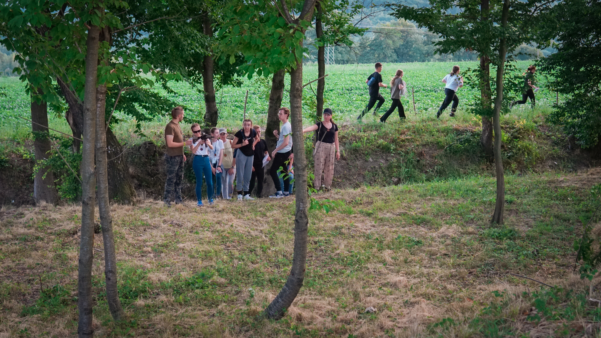

Oazy wakacyjne
Szczególnym charyzmatem Ruchu Światło-Życie oraz głównym jej środkiem i
metodą działania jest oaza rekolekcyjna. Obecnie funkcjonuje kilkanaście
programów oaz różnego typu i stopnia dla różnych grup wiekowych,
stanowych i specjalizacji apostolskiej.
To dzieło zapoczątkowane przez ks. Franciszka Blachnickiego 68 lat temu.
To wtedy poprowadził on pierwsze rekolekcje dla młodzieży, a w
następnych latach stworzył cały program Oaz podzielonych na stopnie,
który zapisał w poszczególnych podręcznikach.
Oazy wakacyjne dla młodzieży odbywają się w podziale wiekowym: Oaza
Dzieci Bożych: dzieci w kl. IV i V SP, Oaza Nowej Drogi: młodzież w kl.
VI, VII i VIII SP oraz Oaza Nowego Życia: młodzież w kl. I, II i III
szkoły średniej. Każda z tych Oaz ma 3 stopnie, co pozwala podzielić
każdy rocznik osobno.
A co odbywa się na tych rekolekcjach? Oto opis ze strony
lodz.oaza.pl.
Tematy poszczególnych dni zależą od stopnia oazy i głównego celu rekolekcji, natomiast pierwszy z nich opiera się na własnym, głębokim doświadczeniu prawdy, jaką jest miłość Boża, która w pełni wyraża się w postaci Chrystusa. Oprócz tego uczestnicy zatrzymują się przy zagadnieniach związanych z grzechem, wyglądem współczesnego świata, trudnościami w wierze i wszystkim tym, z czym mierzy się młody człowiek. Oaza wakacyjna to także czas odpoczynku i nabrania sił – animatorzy dbają o to, by niczego nie było za dużo i by każdy czuł się dobrze.
Dzień zawsze zaczyna się wspólną modlitwą i śniadaniem, natomiast późniejszy plan wygląda różnie. Punkty programu, które realizujemy codziennie to: Msza Święta, namiot spotkania (kilkanaście minut medytacji Słowa Bożego, aby zobaczyć, że jest ono żywe, współczesne i do mnie -mogę z niego czerpać), spotkania w grupach (czas dzielenia się z rówieśnikami, pogłębiania wiary i wspólnego szukania odpowiedzi), czas wolny (nie może go zabraknąć, w końcu są wakacje!), pogodne wieczory (wspólna zabawa, film itp.) lub nabożeństwo wieczorne (w postaci np. adoracji czy innej formy, którą wybiorą animatorzy).
Rekolekcje to doskonały czas na pogłębienie lub nawiązanie relacji z Jezusem i drugim człowiekiem. Animatorzy zawsze służą czasem na rozmowę, a ksiądz dodatkowo sakramentami. Jeśli jesteś zmęczony po całym roku szkolnym, miałeś mało czasu dla Pana Boga, dla siebie, dla innych, czegoś nie rozumiesz, coś jest dla Ciebie abstrakcyjne i nieprawdziwe, czegoś się boisz, chciałbyś coś zmienić lub po prostu odkryć coś nowego nieznanego, poznać wartościowych ludzi i odkryć swoją wartość, a oprócz tego poczuć się przyjęty, potrzebny i kochany – pojedź na oazę! Zaryzykuj, możesz zyskać bardzo dużo.
ONŻ II 1t Przemyśl 2022
 

 

A oto świadectwa uczestniczek tegorocznych Oaz: